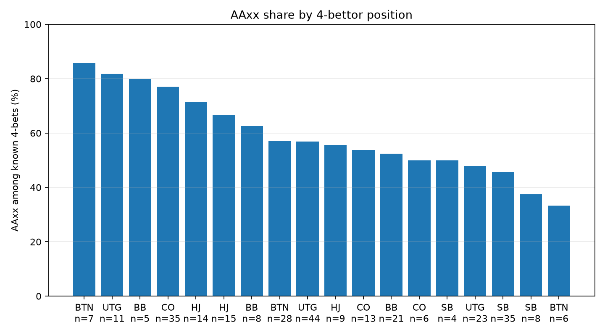
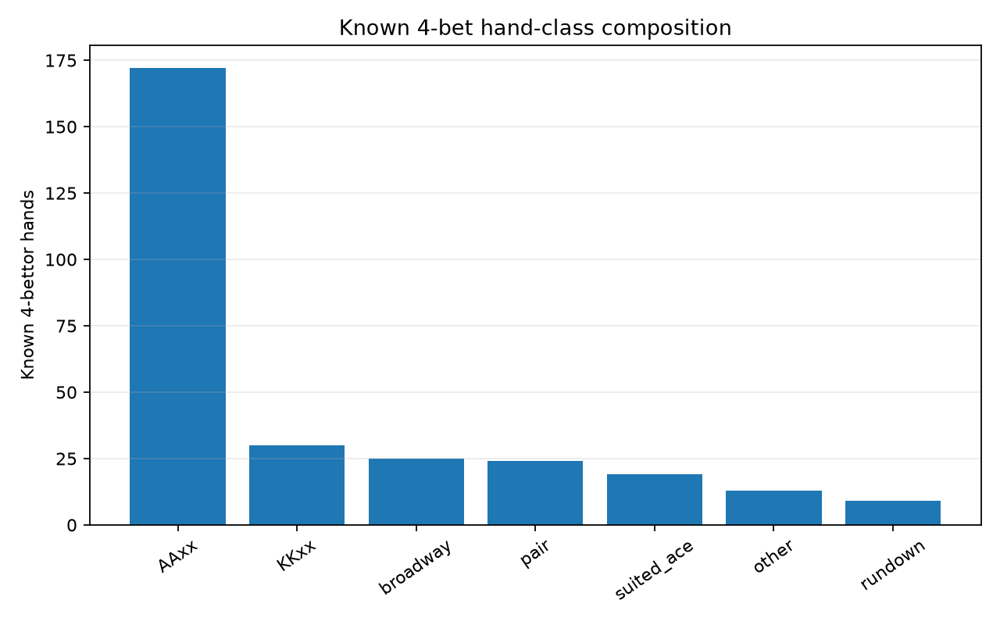

Conditional showdown sample
CoinPoker PLO Four-bet Analyzer
Population-level composition of known/shown four-bet hands. Unknown cards stay visible in coverage counts and are excluded from hand-class denominators.
Stack-filtered 4-bets
468
Known hands
292
AAxx known
172
AAxx % known
58.9%
Min stack
60bb
Stake filter
all
Composition overview


Position summary
| stake_label | fourbettor_position | total_4bets_stack_filtered | known_4bettor_hands | known_rate_pct | known_AAxx | AAxx_pct_of_known | unknown_4bettor_hands |
|---|---|---|---|---|---|---|---|
| PL50 | ALL | 284 | 178 | 62.7% | 105 | 59.0% | 106 |
| PL25 | ALL | 118 | 72 | 61.0% | 38 | 52.8% | 46 |
| PL100 | ALL | 66 | 42 | 63.6% | 29 | 69.0% | 24 |
| PL100 | BB | 9 | 5 | 55.6% | 4 | 80.0% | 4 |
| PL100 | BTN | 10 | 7 | 70.0% | 6 | 85.7% | 3 |
| PL100 | CO | 12 | 6 | 50.0% | 3 | 50.0% | 6 |
| PL100 | HJ | 12 | 9 | 75.0% | 5 | 55.6% | 3 |
| PL100 | SB | 6 | 4 | 66.7% | 2 | 50.0% | 2 |
| PL100 | UTG | 17 | 11 | 64.7% | 9 | 81.8% | 6 |
| PL25 | BB | 15 | 8 | 53.3% | 5 | 62.5% | 7 |
| PL25 | BTN | 15 | 6 | 40.0% | 2 | 33.3% | 9 |
| PL25 | CO | 23 | 13 | 56.5% | 7 | 53.8% | 10 |
| PL25 | HJ | 17 | 14 | 82.4% | 10 | 71.4% | 3 |
| PL25 | SB | 15 | 8 | 53.3% | 3 | 37.5% | 7 |
| PL25 | UTG | 33 | 23 | 69.7% | 11 | 47.8% | 10 |
| PL50 | BB | 39 | 21 | 53.8% | 11 | 52.4% | 18 |
| PL50 | BTN | 42 | 28 | 66.7% | 16 | 57.1% | 14 |
| PL50 | CO | 53 | 35 | 66.0% | 27 | 77.1% | 18 |
| PL50 | HJ | 31 | 15 | 48.4% | 10 | 66.7% | 16 |
| PL50 | SB | 52 | 35 | 67.3% | 16 | 45.7% | 17 |
| PL50 | UTG | 67 | 44 | 65.7% | 25 | 56.8% | 23 |
Known hand classes
| hand_class | count | pct |
|---|---|---|
| AAxx | 172 | 58.9% |
| KKxx | 30 | 10.3% |
| broadway | 25 | 8.6% |
| pair | 24 | 8.2% |
| suited_ace | 19 | 6.5% |
| other | 13 | 4.5% |
| rundown | 9 | 3.1% |
A four-bet is the third preflop raise. ALLIN counts only when it increases the amount to call. Hero is excluded by default. Showdown composition is conditional on cards being revealed and can be affected by selection bias.